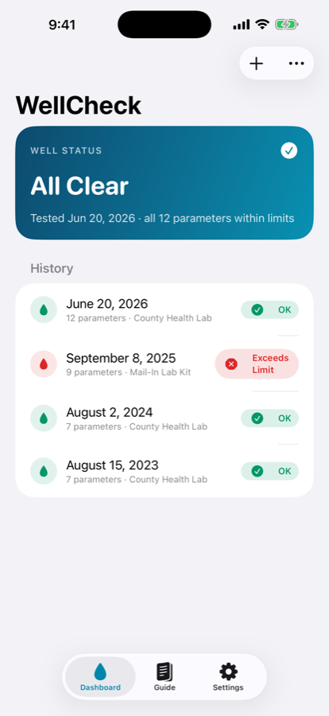
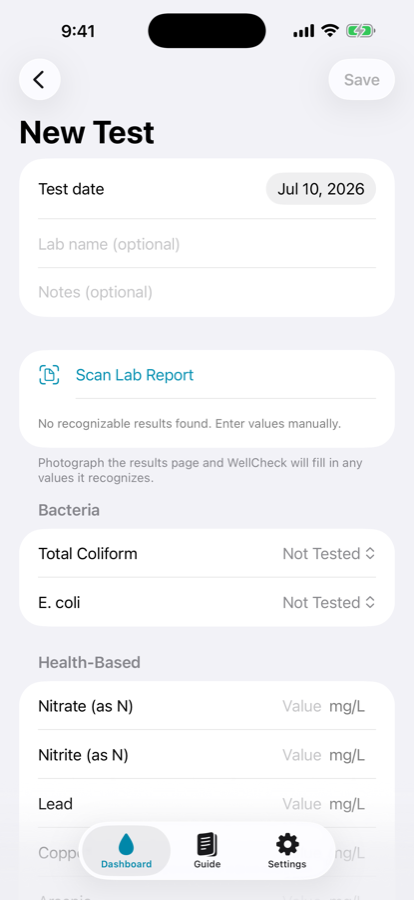
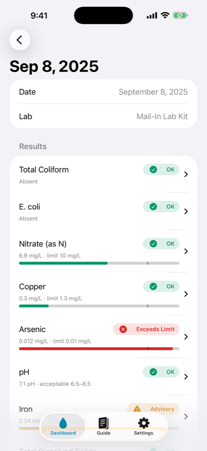
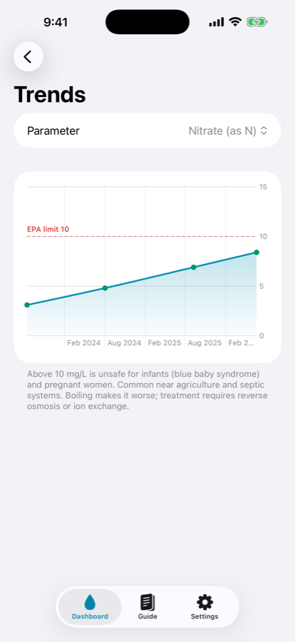

Private well testing companion
Thirteen million American households drink from a private well, and no agency tests that water for them. The lab sends back a page of numbers with no verdict attached. Well Water Log reads that page with you: every value checked against EPA drinking water limits, explained in a sentence you can act on, and kept where you can find it next year.
Get it on the App Store Free · iPhone · on your Home Screen as WellCheck

Every reading you enter lands in one of three buckets, with the EPA limit it was measured against and a paragraph on what to do about it.
Inside the EPA limit and the acceptable range. Nothing to do but test again next year.
Past a secondary, aesthetic guideline — taste, odour, staining, hardness. Not a health limit, and the app says so.
Over an EPA primary maximum contaminant level or action level. The guidance tells you who to call.
The standard analysis state health departments recommend, with primary limits, secondary guidelines, canonical units, and guidance text for each.
Photograph the lab report, confirm what was read, and the rest of the app fills itself in.

Photograph the results page and on-device text recognition fills in what it recognises. Anything it cannot read stays blank for you to type.

Each reading shows its value, the limit it was compared against, and what that means for the people drinking it.

Any parameter you have measured more than once, plotted across every test, with the limit drawn in.
The EPA recommends testing annually. Most owners do not, because nothing reminds them.
A local notification twelve months after your most recent test, adjustable to six or twenty-four. It reschedules itself whenever you log something new.
Every parameter has its own page: what it is, where it comes from in a well, what the limit is, and what people usually do about it.
Type results from a county lab, a mail-in kit, or a state programme. Bacteria are present or absent; everything else takes a number.
No account, no server, no analytics. Your results live in the app on your phone, and go nowhere else.
Water quality is a health question, and an app that overstates itself is worse than no app.
Well Water Log cannot measure anything. It records the numbers a certified laboratory gave you and compares them to published limits.
The guidance is an educational reference against EPA standards, not a substitute for your health department, your lab, or your doctor.
Text recognition on a photographed report gets things wrong. Nothing it reads is saved until you have checked it against the paper.
This version tracks a single well. If you own several, they would share one history — worth knowing before you buy.
Logging and interpreting your results is free, forever, for everyone.
Free
$0
The part that matters most
Pro unlock
$8.99
One-time purchase, not a subscription